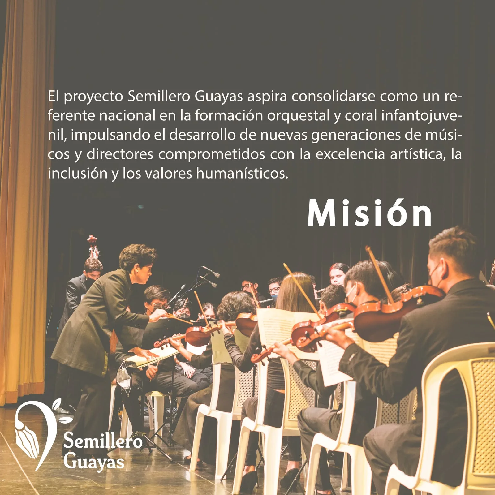

🎷 🎤 Formando talentos a través de la música
Semillero Guayas es un espacio de formación artística donde la música inspira, educa y transforma vidas en la provincia del Guayas.
Semillero Guayas es un proyecto de formación musical enfocado en el desarrollo integral de niñas, niños y jóvenes a través del canto coral y la práctica instrumental.
Nuestro objetivo es brindar un espacio donde los participantes puedan descubrir y fortalecer sus capacidades artísticas, aprender música en comunidad y vivir experiencias que contribuyan a su crecimiento personal y cultural.
A través de la música fomentamos la creatividad, la sensibilidad artística y la construcción de valores que acompañan a nuestros estudiantes dentro y fuera del escenario.

Impulsar la formación musical de niñas, niños y jóvenes mediante programas de coro y orquesta, promoviendo el aprendizaje artístico, la disciplina, la inclusión y el trabajo colaborativo como herramientas para su desarrollo integral.
Ser un referente de formación musical en la provincia del Guayas, reconocidos por promover el talento artístico de nuevas generaciones y generar espacios donde la música sea un instrumento de transformación social y cultural.
Formación vocal, técnica de canto, expresión artística y trabajo colectivo. El programa coral desarrolla las habilidades vocales y expresivas de los participantes mediante el aprendizaje colectivo y la interpretación musical. A través del canto, los estudiantes fortalecen la confianza, la comunicación y el sentido de pertenencia.
Ver programaFormación instrumental, práctica grupal, desarrollo musical y presentaciones artísticas. El programa orquestal brinda formación instrumental y práctica grupal, permitiendo que cada ensayo y presentación sea un espacio de aprendizaje, crecimiento y superación.
Ver programaLa música transforma vidas. Sé parte de una comunidad donde los sueños se convierten en melodías. Tu talento tiene un lugar.
Inscríbete aquí